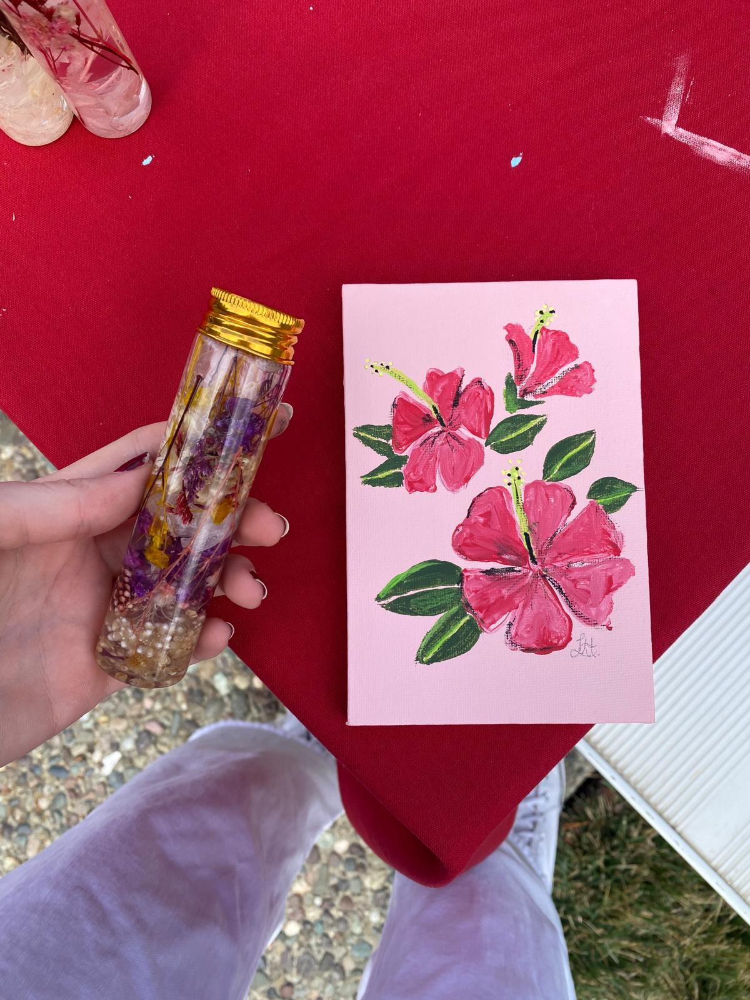
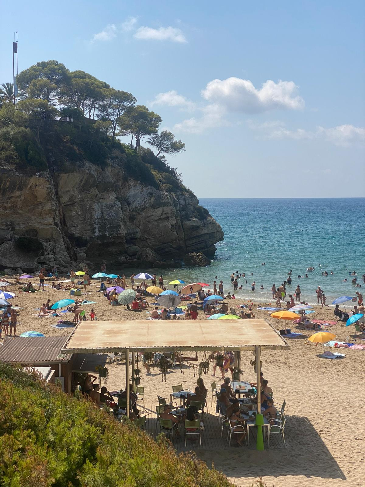

Personal Interests
- Painting
- Since I was a kid I love crafting, drawing and painting, but I don't paint as much as I did when I was younger.
- In many of the gifts I hav given to people, there is always some kind of craft or painting made by me.
- I made this painting and flower bottle at the pet therapy fair in SMC:

- TV shows and movies
- TV shows and movies are one of my favorite activities to do alone or with friends. It is my time to relax, eat, be comfy and escape from reality for a while.
- I am currently watching Greys Anatomy.

- Graphic design & marketing
- I enjoy looking at marketing communication strategies of different companies, specially looking at their ads. I analyze the creativity behind those ads, and consider them good or bad.
- Although I don't study graphic design, I love designing presentations, flyers, logos, posters and everything related. Here are some of the designs I made:
- Going to the beach
- In my town back in Spain we have a beautiful beach. I go more during the summer, but sometimes I go during the winter as well. I love how connected I feel with nature when I go, and you can do many activities there as well!
- The beach below is two hours away from my hometown.

Go back to the main page
Note: This page was compiled as an assignement to do a personal webpage for my CS 102 course at Saint Mary's College of California.